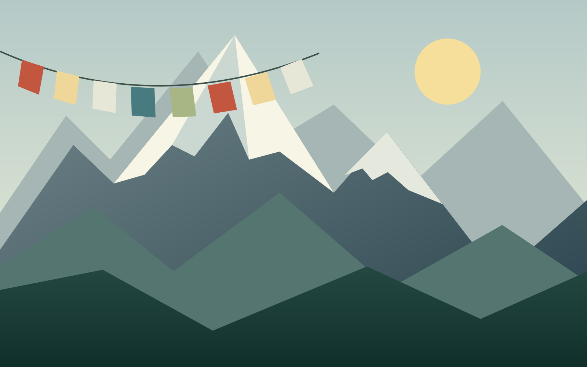

LIVING HERITAGE
Kathmandu Valley
Look closely at the courtyards and carved windows: architecture is part of the story here, alongside the everyday life of the city.
View place card ↓
A PERSONAL INTRODUCTION TO MY HOME COUNTRY
Snow-covered peaks. Stories in every courtyard.
And a welcome that stays with you.
NAMASTE / नमस्ते
Nepal is my home country: a place of Himalayan landscapes, lively cities, quiet villages, and many languages and traditions. This is a small introduction to the places and everyday details that make it special.
— Swagat Neupane
A DIFFERENT WAY TO EXPLORE
Select a point on the map
or use the place buttons below.
LIVING HERITAGE
Look closely at the courtyards and carved windows: architecture is part of the story here, alongside the everyday life of the city.
View place card ↓FIND YOUR KIND OF WONDER
From mountain horizons to the streets
where history is still part of daily life.
01 / LIVING HERITAGE
Brick courtyards, carved wooden windows, and temple squares tell the stories of Nepal’s historic cities.
Architecture & culture02 / HIMALAYAN HORIZONS
Rugged ridgelines and snow-covered summits shape one of Nepal’s most recognizable landscapes.
Mountains & landscapes03 / A SLOWER RHYTHM
Phewa Lake and mountain views give this city a different pace, with moments to pause by the water.
Lakes & scenery04 / A PLACE OF REFLECTION
Known as the birthplace of the Buddha, Lumbini brings together sacred history and spaces for reflection.
History & reflectionTHE HEART OF THE PLACE
It lives in celebrations, shared meals, craft, and everyday conversation. Nepal’s communities bring their own languages, customs, and stories to that shared life.
“Namaste,” often accompanied by joined palms, is a familiar way to greet someone.
Festivals such as Dashain and Tihar bring family gatherings and traditions that vary across communities.
Woodcarving, metalwork, and weaving are part of a rich tradition of Nepali craftsmanship.
A TASTE OF HOME
Some introductions are best
made over a shared meal.
Dumplings with a variety of fillings, often served with a flavorful dipping sauce.
Lentils and rice, commonly accompanied by vegetables, pickles, and other sides.
A ring-shaped rice bread associated with celebrations and a welcoming table.
A PROJECT WITH ROOTS
My first HTML and CSS website was about Nepal. Revisiting that project connects my background with a new set of web development ideas: illustration, interaction, and a more thoughtful reading experience.
— Swagat Neupane
See how the project evolved →
A SMALL WINDOW INTO A SPECIAL PLACE
Thanks for exploring a little of Nepal with me.
Back to my projects ↗